가장 비싼 벽지가
가장 좋은 벽지는 아닙니다.
누가 사는지, 얼마나 오래 사용할지, 벽을 얼마나 자주 만지고 닦는지에 따라 좋은 벽지는 달라집니다.
8종 비교 시작하기 ↓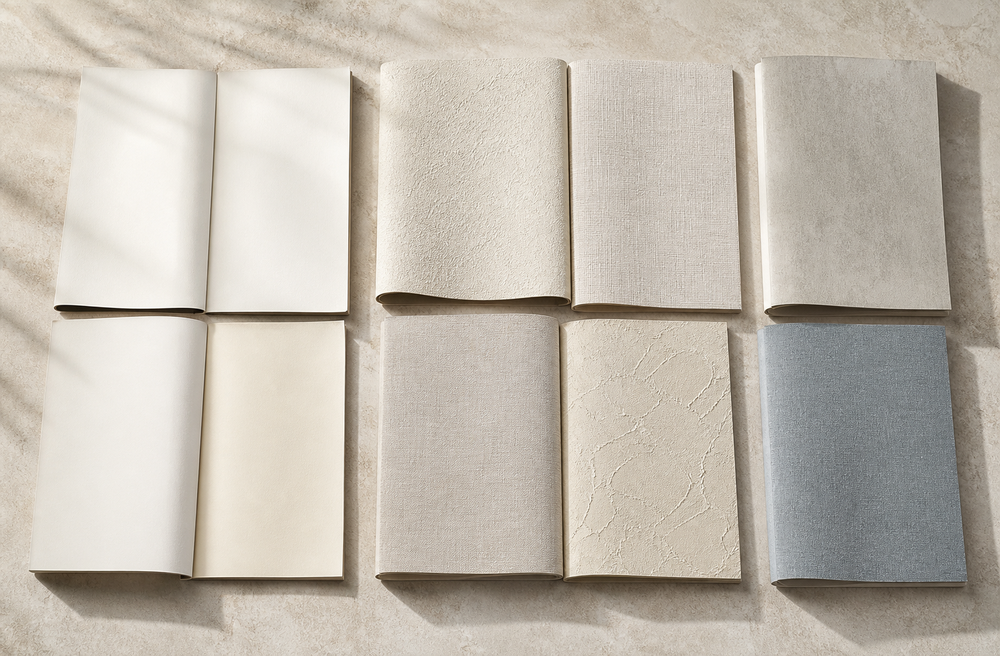
누가 사는지, 얼마나 오래 사용할지, 벽을 얼마나 자주 만지고 닦는지에 따라 좋은 벽지는 달라집니다.
8종 비교 시작하기 ↓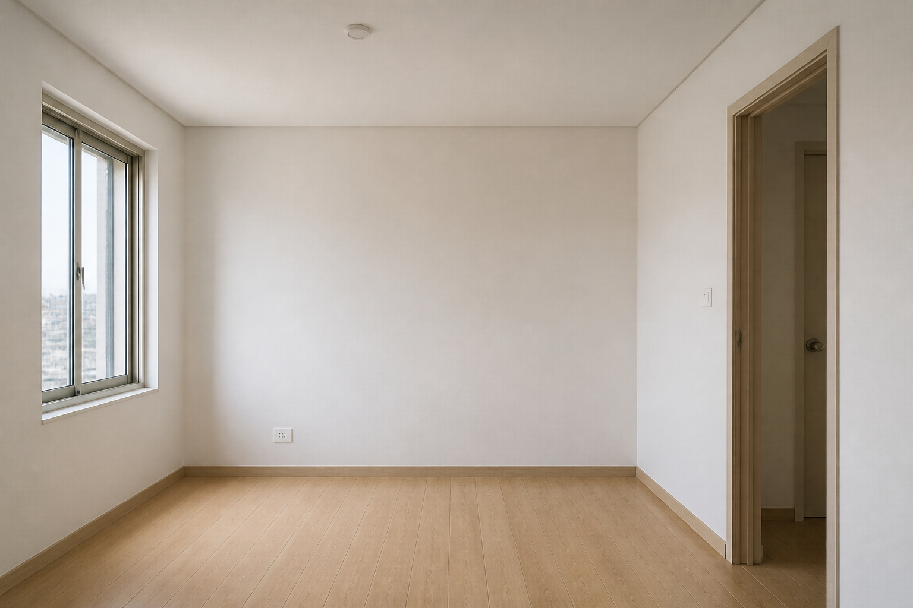
가격과 교체 편의가 우선인 전세·임대·단기 사용 공간에 검토합니다.
가격 ★★★★★관리 ★★☆☆☆
표면 질감과 관리성을 중요하게 보는 자가주택·거실·안방에 검토합니다.
질감 ★★★★☆관리 ★★★★☆가격 부담을 낮춘 기본형, 질감 중심의 프리미엄, 생활 내구성 중심의 기능성으로 나눠 비교합니다.
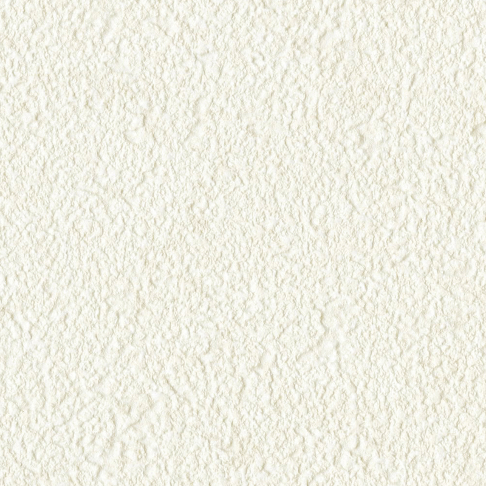
예산을 조절하며 실크벽지의 기본 완성도를 원하는 작은방과 임대 공간.
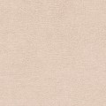
일반 주거공간에서 부담 없이 검토하는 기본·중급 실크 제품군.
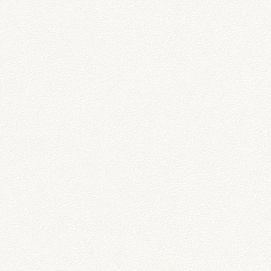
가격과 표면 표현 사이의 균형을 찾는 침실·작은방·서재.
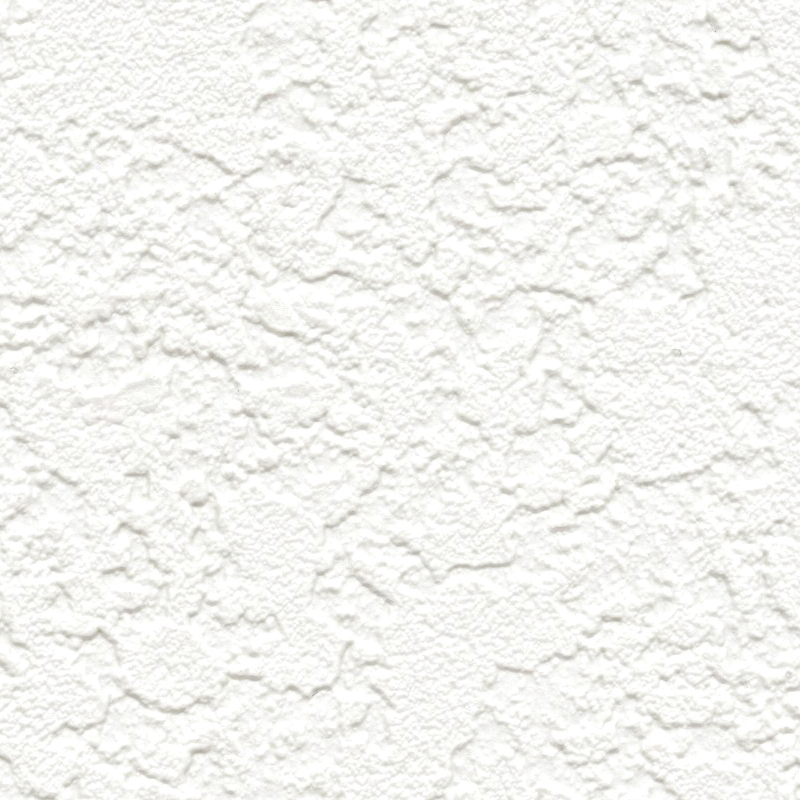
두께감과 회벽 계열의 입체적인 텍스처를 원하는 거실과 안방.
회벽·페인트·패브릭 표현과 따뜻한 내추럴 인테리어에 적합한 선택.
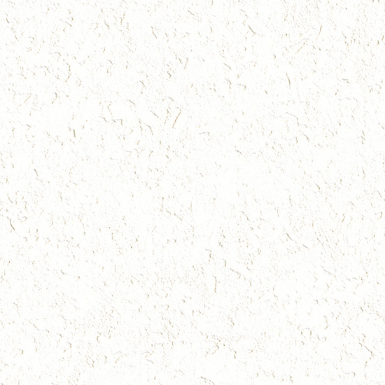
깊은 엠보와 두께감으로 벽이 고급스럽게 보이는 것을 우선할 때.
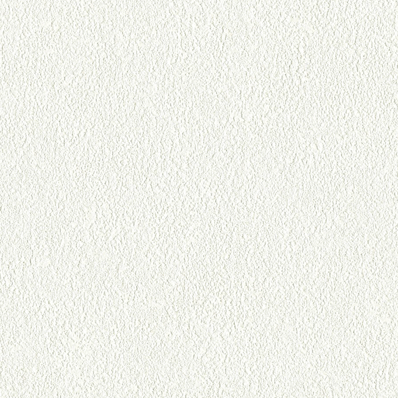
복도·코너·아이와 반려동물 공간처럼 마찰과 긁힘이 잦은 위치.
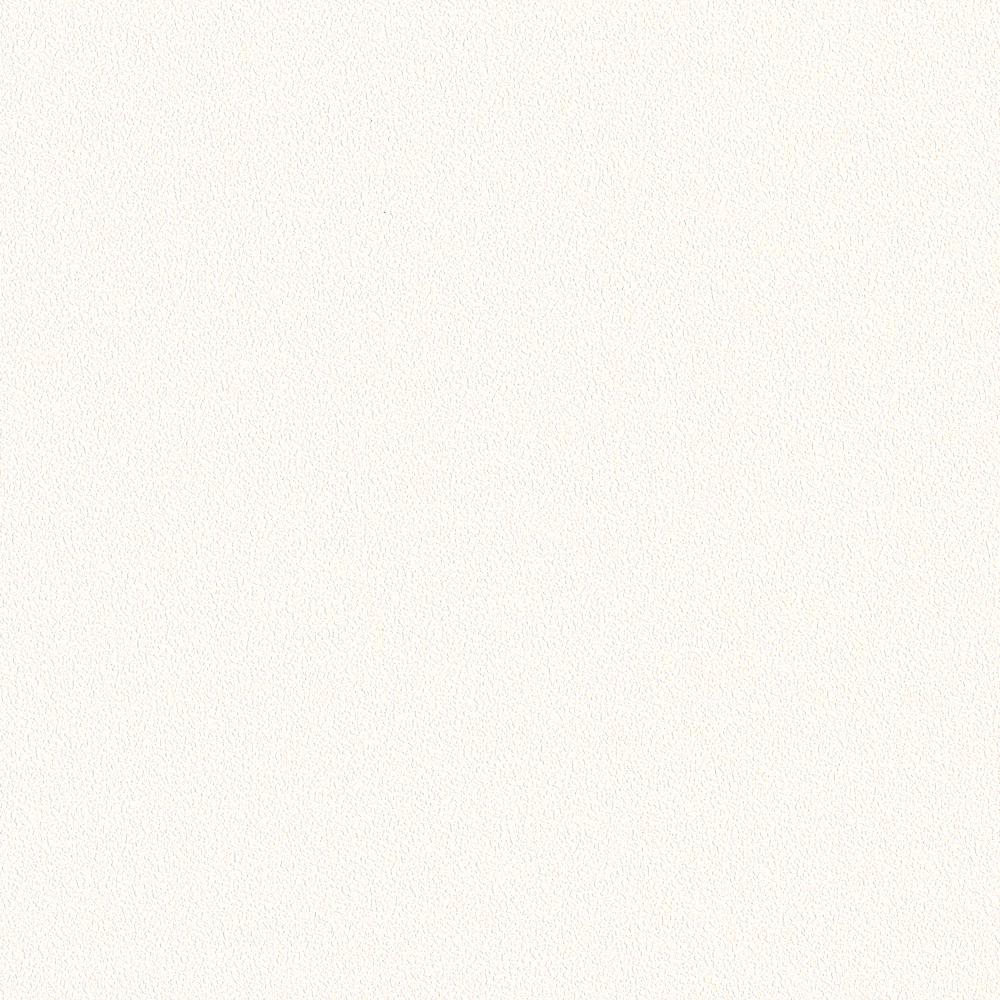
질감보다 표면 강도와 스크래치 대응을 우선하는 생활 밀착 공간.
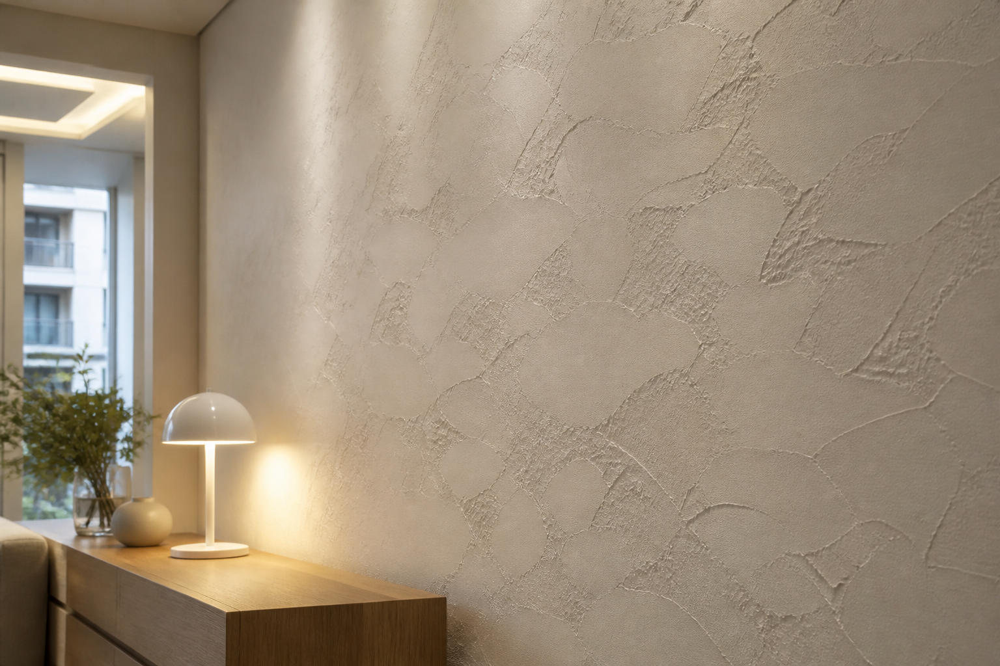
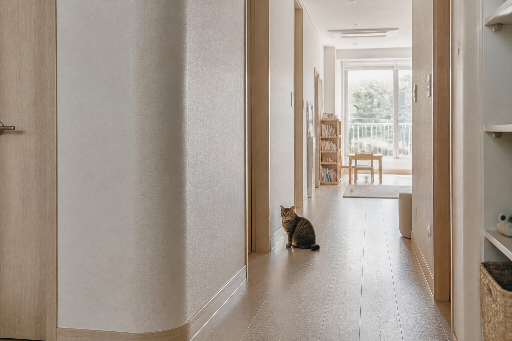
₩ 표시는 제품군의 상대적인 가격 등급입니다. 실제 금액은 품번·판매처·평수·철거·초배·퍼티·무몰딩 여부에 따라 달라집니다.
벽이 하나의 디자인 마감재처럼 보이는 것이 가장 중요할 때.
아이와 반려동물, 복도와 코너처럼 접촉이 잦은 공간일 때.
회벽 질감 · 두께감 · 프리미엄 표현
스크래치 · 내마모성 · 생활 내구성
LIVING프리모 · 파사드 · 디아망
목적: 고급스러운 질감
 BEDROOM
BEDROOM프리모 · 파사드 · 디아망
목적: 질감과 편안함
 HALLWAY
HALLWAY포티스 · 월가드
목적: 스크래치 내구성
 KIDS ROOM
KIDS ROOM베스띠 · 포티스 · 월가드
목적: 관리와 내구성
생활 구성과 가장 중요한 기준을 선택해보세요.
생활방식에 맞는 제품군과 적용 위치를 안내합니다.